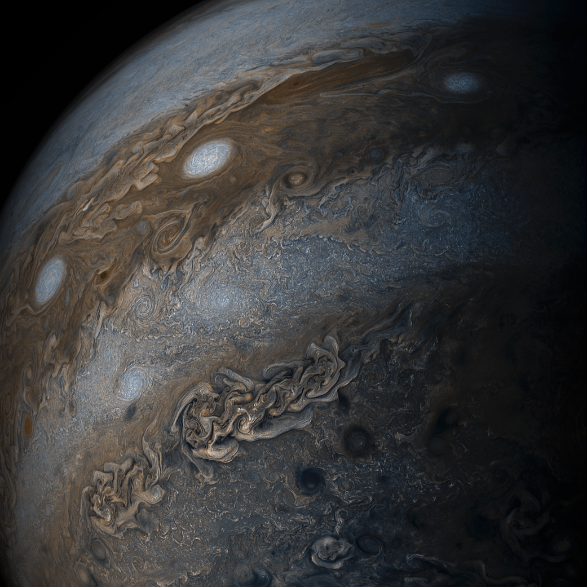

The mightiest planet in the Solar System is being lovingly photographed by high definition cameras on the Juno spacecraft, currently orbiting Jupiter. The Juno mission, having successfuly placed the spacecraft in orbit in the correct orientation around Jupiter mid-2016, has been slowly gathering data and photographing the planet since December. Jupiter hasn’t had a spacecraft in orbit since Galileo’s mission to capture Shoemaker-Levy in the mid-90s. The challenges of the Juno mission are many. Jupiter is a vast and deadly planet. It’s not simply a question of its gravity: Jupiter emits deadly levels of radiation that can affect the instruments on board spacecraft. Juno was constructed with these considerations in mind. The latest crop of photographs shows the clouds of Jupiter in truly exquisite detail. The serene mask of Jupiter is actually endless turmoil of storms, counter storms, running in stripes in different directions around the planet. We’ve seen them before, they were captured by Voyager. But here they are in detail as never seen before:
Juno's Mission PageYou can talk to planetary scientists Dr Horst live here
